Еда в Яндекс Go — каталогЕда в Яндекс Go
20 макетов сборщика · индекс 83 исходных макетов Figma · версия 1.0.0
Превью ниже — адаптация PPTX, а не изображения исходной Figma. Полный исходник открывается по ссылке.
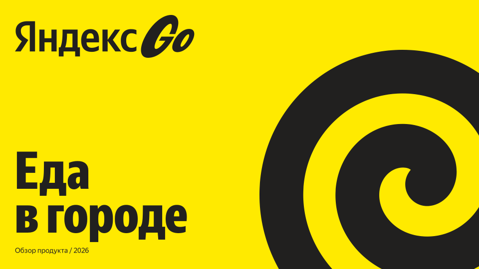
01 · Обложка презентации
coverИсходный макет Figma
02 · Начало нового раздела
sectionИсходный макет Figma
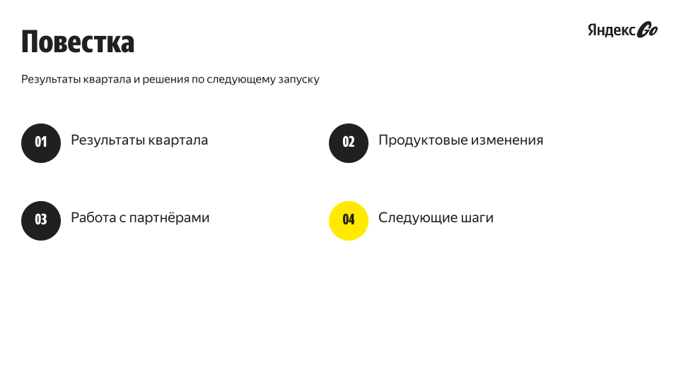
03 · План встречи
agendaИсходный макет Figma
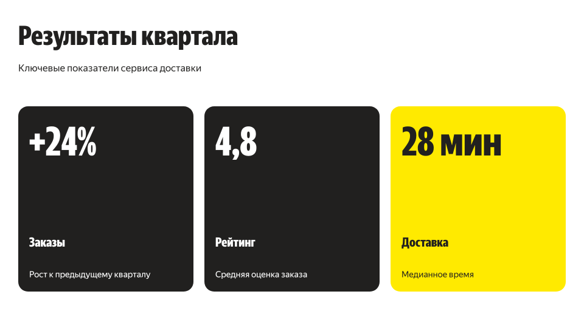
04 · Три ключевых показателя
metrics3Исходный макет Figma
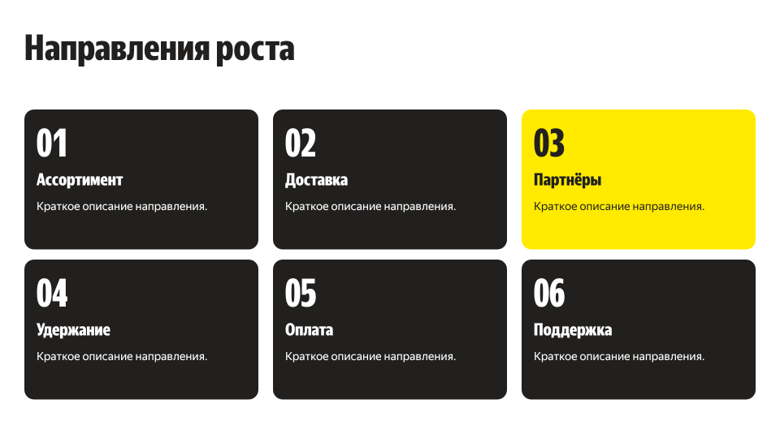
05 · Шесть направлений
grid6Исходный макет Figma
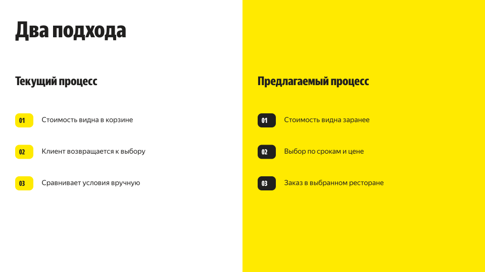
06 · Сравнение двух подходов
comparisonИсходный макет Figma
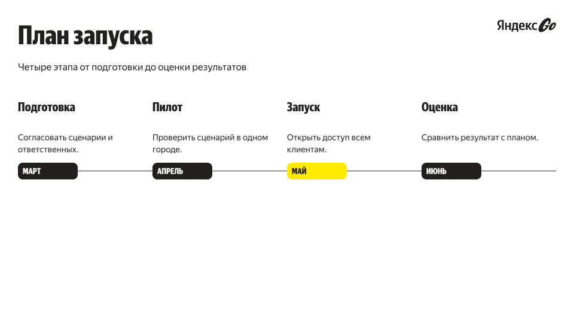
07 · Четыре этапа запуска
timelineИсходный макет Figma
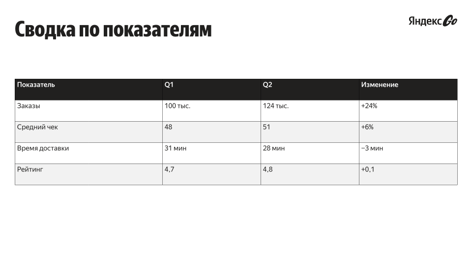
08 · Сводная таблица
tableИсходный макет Figma
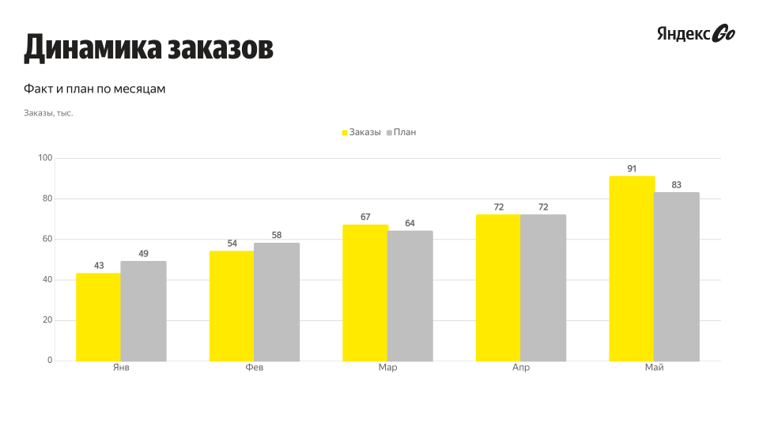
09 · Динамика по категориям
barИсходный макет Figma
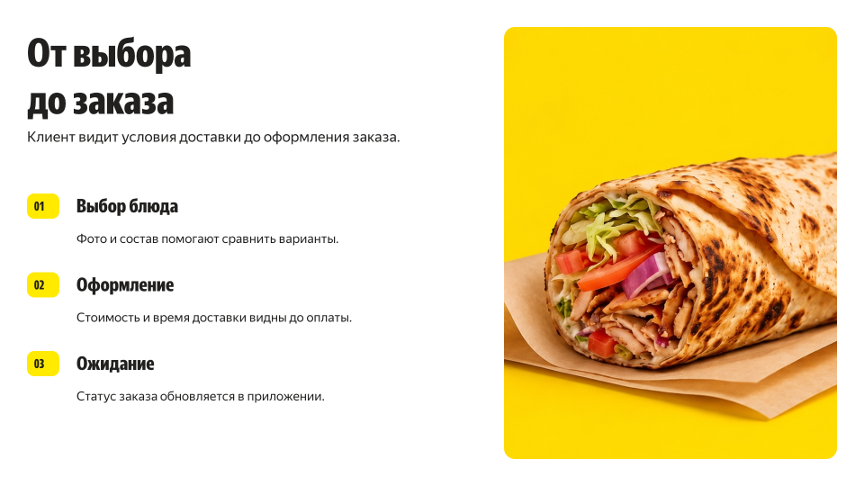
10 · Сценарий с фотографией
text-photoИсходный макет Figma
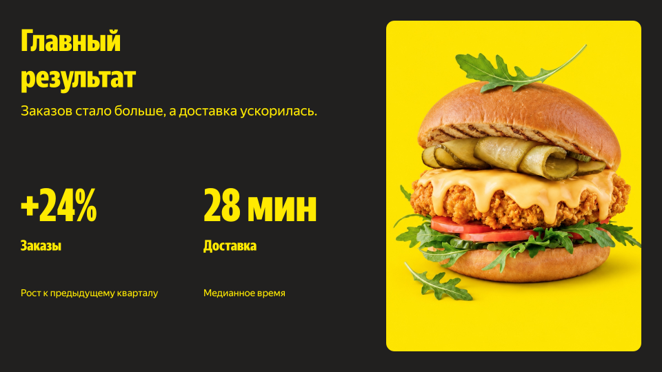
11 · Фото и два показателя
photo-kpiИсходный макет Figma
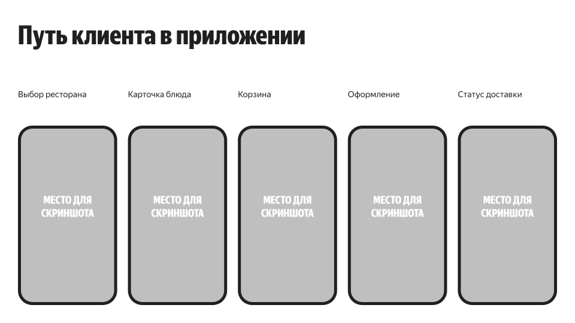
12 · Путь клиента: до пяти экранов
screenshotsИсходный макет Figma
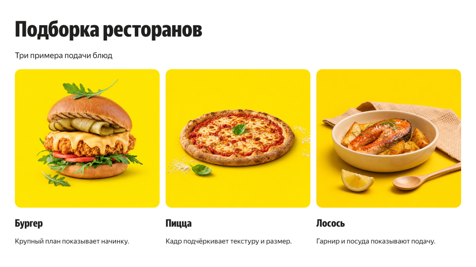
13 · Три блюда или проекта
galleryИсходный макет Figma
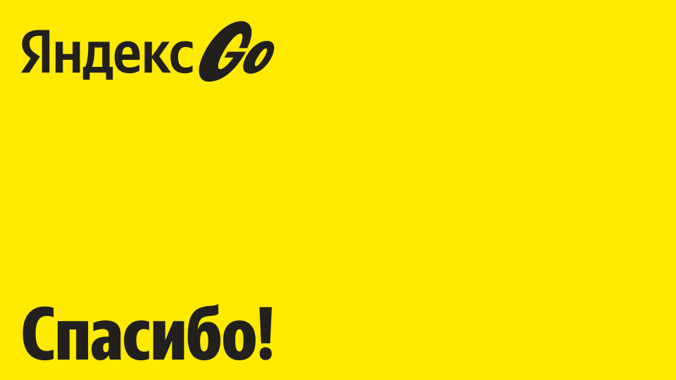
14 · Завершение выступления
finalИсходный макет Figma
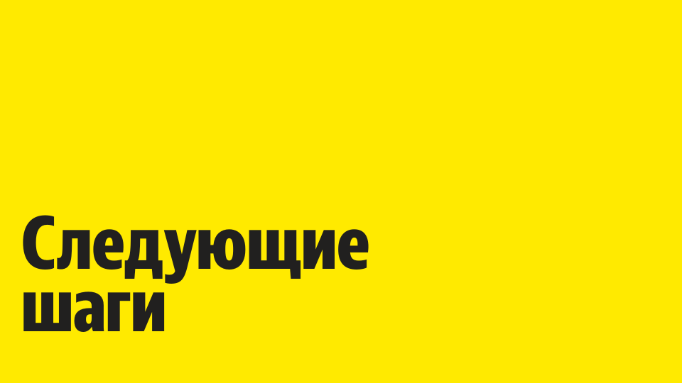
15 · Альтернативный раздел
section-yellowИсходный макет Figma
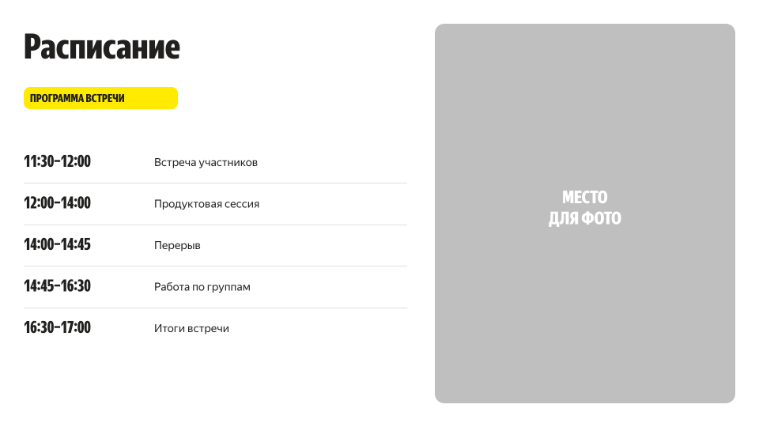
16 · Расписание и фото
scheduleИсходный макет Figma
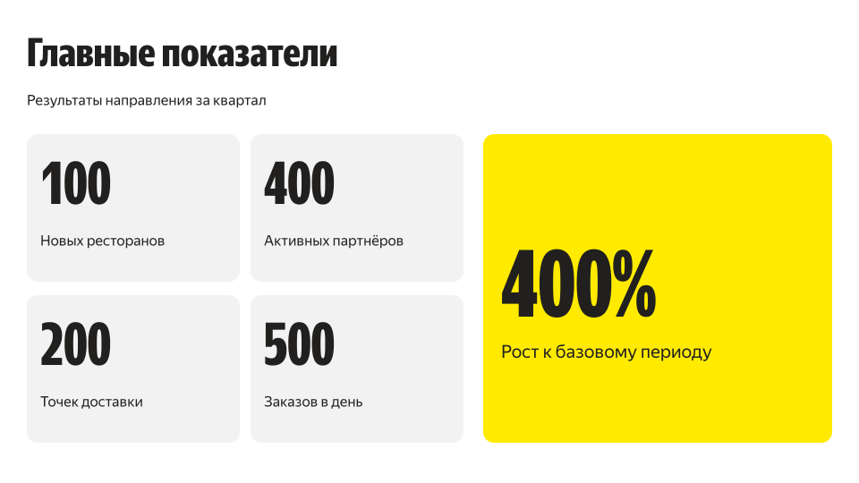
17 · Четыре значения и главный результат
kpi-gridИсходный макет Figma
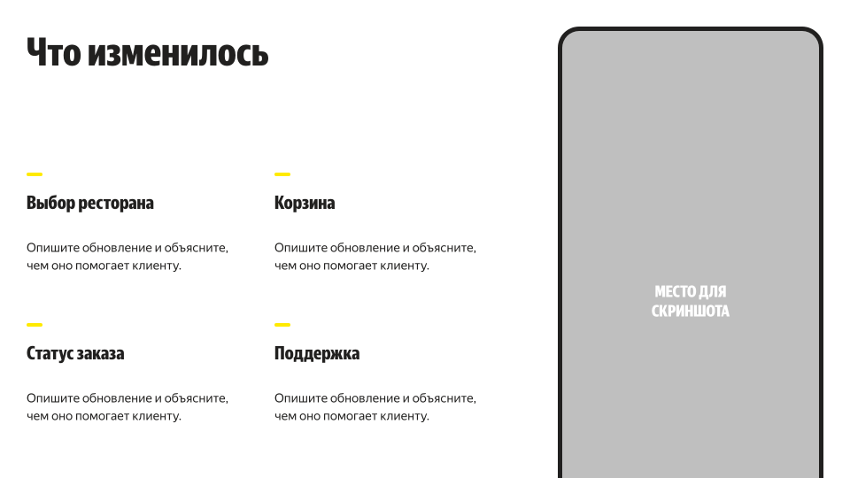
18 · Четыре изменения и экран
productИсходный макет Figma
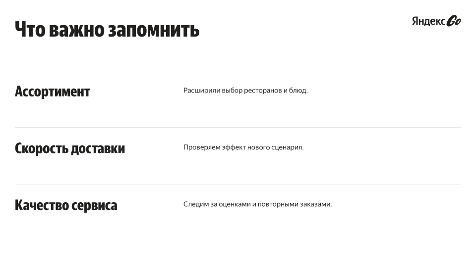
19 · Три ключевых тезиса
thesesИсходный макет Figma
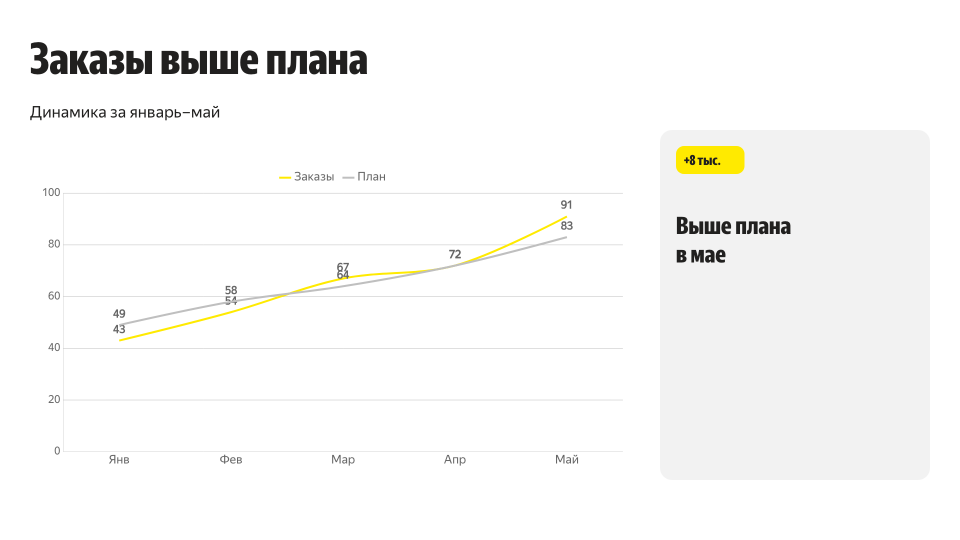
20 · Динамика и основной вывод
line-resultИсходный макет Figma